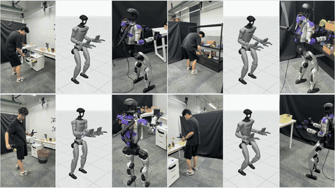
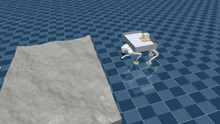

ZJU-UIUC Institute
B.E. in Mechanical Engineering · GPA: 3.97/4.3
Humanoids will bear witness to true intelligence.
I am a first-year Ph.D. student in the College of Control Science and Engineering at Zhejiang University, advised by Prof. Liangjing Yang and co-advised by Prof. Zhongyu Li at The Chinese University of Hong Kong (CUHK). My collaborating advisor is Prof. Chao Xu at ZJU FAST-Lab.
My former Ph.D. advisor was Prof. Hua Chen, now Full-Time CTO at LimX Dynamics.
I am currently an intern at Mondo Robotics, mentored by Shuo Yang.
I am fortunate to work with Leixin Chang, whose guidance has been invaluable at the beginning of my academic journey.
My research interests lie in humanoid loco-manipulation: how to bridge high-level behavior cloning (BC) with low-level dynamics.
My Cat Xixi（希希） — “hope” in Chinese.

B.E. in Mechanical Engineering · GPA: 3.97/4.3
B.E. in Mechanical Engineering · GPA: 3.92/4.0
Ph.D. in Control Science and Engineering

Yuxuan Nai, Leixin Chang, Liangjing Yang, Shuo Yang, Zhongyu Li
Yuxuan Nai, Ding Jiang, Ziyin Han, Chengyu Yang, Sheng Cheng*, Naira Hovakimyan*

Leixin Chang, Yuxuan Nai, Hua Chen*, Liangjing Yang*
Unified locomotion policy and terrain-aware parkour for the A3 humanoid.
Founded and led the institute's first photography club.